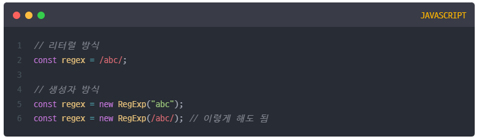
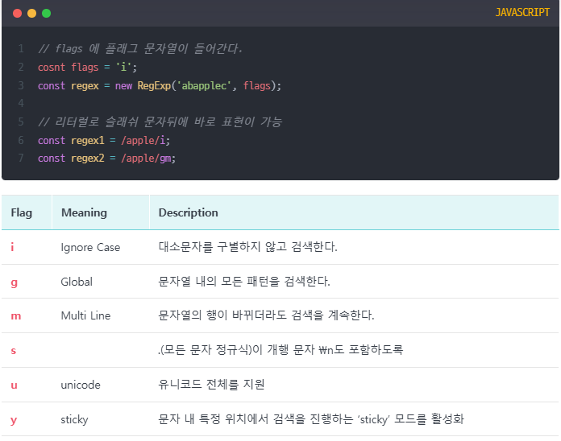
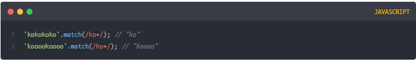
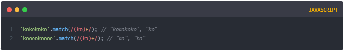
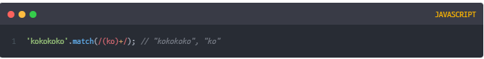
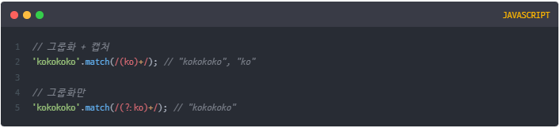

정규표현식=정규식=Regular Expression : 문자열에서 특정 내용의 유무확인,대체 또는 발췌하는데 사용된다.
ex) 회원가입을 하거나 개인정보를 입력할 때 입력조건에 맞지 않으면 경고창이 뜬다. 비밀번호 조건을 예로 들면 영어대소문자, 특수문자(?,*,^,$)를 한개 이상 포함해야 한다면 이 조건을 충족시키니 않은 경우 필터링되어 조건에 맞게 재입력해야한다.
이처럼 반복문과 조건문을 사용해야 할것같은 복잡한 코드도 정규표현식을 이용하면 매우 간단하게 표현할 수 있으며 주로 다음과 같은 상황에서 굉장히 유용하게 사용된다.
정규식 구성 코드는 슬래쉬 문자 두개 사이로 정규식 기호가 들어가는 형태이다. 뒤에 'i'는 정규식 플래그이다.
생성 방법으로는 리터럴방식과 생성자방식 두가지가 있다.
정규식 플래그는 정규식을 생성할 때 고급 검색을 위한 전역 옵션을 설정할 수 있도록 지원하는 기능이다.


코드를 보면 알수 있듯이, 표현식 ko+는 "o"만 + 를 적용시킨다. ("k" 는 적용안시킴)
그 결과로 "koooo"가 반환되었다.

하지만 표현식 (ko)+는 "k"와 "o"를 묶었기(그룹화) 때문에 "ko" 자체를 1회 이상 연속으로 반복되는 문자로 검색하게 된다. 따라서 결과가 "kokokoko"가 반환되었다.
그런데 마지막으로 패턴 ()를 사용한 정규식들의 결과를 잘 보면 일치한 결과가 2개가 나온다.
일부러 한번만 검색되라고, 플래그 g를 사용하지 않았는데 말이다.
패턴 그룹화 ()는 괄호 안에 있는 표현식을 캡처하여 사용한다.
캡처는 일종의 복사본을 생성하는 개념이라고 보면 된다. (복사라는 단어는 이해를 돕기 위해서만 사용하며, 실제 개념과는 다르다)

정규식의 캡처 원리를 알아보자면, 패턴 ()안에 있는 "ko"를 그룹화하여 캡처(복사)한다.
우선 캡처된 표현식은 당장 사용되지 않으며, 그룹화된 "ko"를 패턴 +로 1회 이상 연속으로 반복되는 문자로 검색한다. 그렇게 캡처 외 표현식이 모두 작동하고 난 뒤에 복사했던(캡처된) 표현식 "ko"가 검색되는 것이다.
즉, 위의 검색 순서를 정리하자면 다음과 같게 된다.
1.그룹화된 "ko"를 패턴 +로 1회 이상 연속으로 반복하여 검색하여 "kokokoko"를 반환하고
2.캡처된 "ko"로 검색하여 "ko"를 추가 반환
위에서 살펴봤듯이 뜻하지않은 정규식 그룹화 캡쳐 기능 때문에 쓸데없는 결과값을 얻는 것이 싫다면, 괄호 안에 ?: 문자를 씀으로써 캡쳐를 비활성화 할 수 있다.
따라서 표현식 캡처를 하지 않기 때문에 "k"와 "o"를 그룹화한 "ko"만으로 검색되게 된다.
